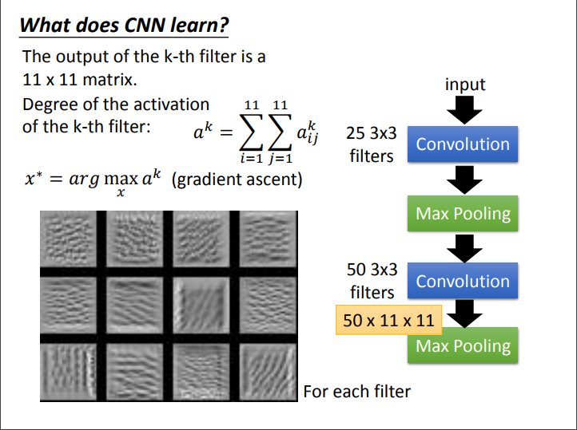

# Problem 5: Analyze the Model by Visualizing Filters
Problem Description:
* use **Gradient Ascent** method mentioned in class to find the image that activates the selected filter the most and plot them (start from white noise).
* Feed an image in your validation set to the model, and plot the output of that filter
* Describe what you observed, and explain it
Hint:
* you can use other model with poor performance to see what is the difference
* you can also try to find which image will activate the specific class the most
* you can start from natural image (not white noise), and try to create the <a href="https://arxiv.org/pdf/1412.6572.pdf" target="_blank">**adversial image**</a>
## Lecture

## 範例
* **[Note] 請不要直接使用助教的圖來當成作業交上來**
* **[Note] 請不要使用這張範例圖**
<img src="17.png" alt="Drawing" style="width: 200px;"/>
* **[Note] colormap 請不要使用 Purples**
<img src="http://i.imgur.com/HdQ9oQU.png" alt="Drawing" style="width: 1300px;"/>
<img src="http://i.imgur.com/xEvPeW8.png" alt="Drawing" style="width: 1300px;"/>
## TA hour
<i class="fa fa-diamond"></i> Keywords: `keras.backend`, `gradients`
#### 畫圖
以下的程式碼為matplotlib.pyplot的簡單示範，你也可以使用不同的呈現方式及函式庫
<div class="highlight"><pre><span></span><span class="kn">import</span> <span class="nn">matplotlib.pyplot</span> <span class="kn">as</span> <span class="nn">plt</span>
<span class="k">def</span> <span class="nf">main</span><span class="p">():</span>
<span class="n">fig</span> <span class="o">=</span> <span class="n">plt</span><span class="o">.</span><span class="n">figure</span><span class="p">(</span><span class="n">figsize</span><span class="o">=</span><span class="p">(</span><span class="mi">14</span><span class="p">,</span><span class="mi">8</span><span class="p">))</span> <span class="c1"># 大小可自行決定</span>
<span class="k">for</span> <span class="n">i</span> <span class="ow">in</span> <span class="nb">range</span><span class="p">(</span><span class="n">nb\_filter</span><span class="p">):</span> <span class="c1"># 畫出每一個filter</span>
<span class="n">ax</span> <span class="o">=</span> <span class="n">fig</span><span class="o">.</span><span class="n">add\_subplot</span><span class="p">(</span><span class="n">nb\_filter</span><span class="o">/</span><span class="mi">16</span><span class="p">,</span><span class="mi">16</span><span class="p">,</span><span class="n">i</span><span class="o">+</span><span class="mi">1</span><span class="p">)</span> <span class="c1"># 每16個小圖一行</span>
<span class="n">ax</span><span class="o">.</span><span class="n">imshow</span><span class="p">(</span><span class="n">image</span><span class="p">,</span><span class="n">cmap</span><span class="o">=</span><span class="s1">&#39;BuGn&#39;</span><span class="p">)</span> <span class="c1"># image為某個filter的output或最能activate某個filter的input image</span>
<span class="n">plt</span><span class="o">.</span><span class="n">xticks</span><span class="p">(</span><span class="n">np</span><span class="o">.</span><span class="n">array</span><span class="p">([]))</span>
<span class="n">plt</span><span class="o">.</span><span class="n">yticks</span><span class="p">(</span><span class="n">np</span><span class="o">.</span><span class="n">array</span><span class="p">([]))</span>
<span class="n">plt</span><span class="o">.</span><span class="n">xlabel</span><span class="p">(</span><span class="s1">&#39;whatever subfigure title you want&#39;</span><span class="p">)</span> <span class="c1"># 如果你想在子圖下加小標的話</span>
<span class="n">plt</span><span class="o">.</span><span class="n">tight\_layout</span><span class="p">()</span>
<span class="n">fig</span><span class="o">.</span><span class="n">suptitle</span><span class="p">(</span><span class="s1">&#39;Whatever title you want&#39;</span><span class="p">)</span>
<span class="n">fig</span><span class="o">.</span><span class="n">savefig</span><span class="p">(</span><span class="n">os</span><span class="o">.</span><span class="n">path</span><span class="o">.</span><span class="n">join</span><span class="p">(</span><span class="n">img\_path</span><span class="p">,</span><span class="s1">&#39;Whatever filename you want&#39;</span><span class="p">))</span> <span class="c1">#將圖片儲存至disk</span>
</pre></div>
以下會以 **Keras** 為使用的套件來做介紹 (並以tensorflow作為backend)
#### 利用梯度遞增法，找出最能激活特定filter的圖片(從白噪音開始)
<div class="highlight"><pre><span></span><span class="ch">#!/usr/bin/env python</span>
<span class="c1"># -*- coding: utf-8 -*-</span>
<span class="kn">import</span> <span class="nn">os</span>
<span class="kn">import</span> <span class="nn">matplotlib.pyplot</span> <span class="kn">as</span> <span class="nn">plt</span>
<span class="kn">from</span> <span class="nn">keras.models</span> <span class="kn">import</span> <span class="n">load\_model</span>
<span class="kn">from</span> <span class="nn">keras</span> <span class="kn">import</span> <span class="n">backend</span> <span class="k">as</span> <span class="n">K</span>
<span class="kn">from</span> <span class="nn">utils</span> <span class="kn">import</span> <span class="o">\*</span>
<span class="kn">from</span> <span class="nn">marcos</span> <span class="kn">import</span> <span class="o">\*</span>
<span class="kn">import</span> <span class="nn">numpy</span> <span class="kn">as</span> <span class="nn">np</span>
<span class="k">def</span> <span class="nf">normalize</span><span class="p">(</span><span class="n">x</span><span class="p">):</span>
<span class="c1"># utility function to normalize a tensor by its L2 norm</span>
<span class="k">return</span> <span class="n">x</span> <span class="o">/</span> <span class="p">(</span><span class="n">K</span><span class="o">.</span><span class="n">sqrt</span><span class="p">(</span><span class="n">K</span><span class="o">.</span><span class="n">mean</span><span class="p">(</span><span class="n">K</span><span class="o">.</span><span class="n">square</span><span class="p">(</span><span class="n">x</span><span class="p">)))</span> <span class="o">+</span> <span class="mf">1e-7</span><span class="p">)</span>
<span class="k">def</span> <span class="nf">grad\_ascent</span><span class="p">(</span><span class="n">num\_step</span><span class="p">,</span><span class="n">input\_image\_data</span><span class="p">,</span><span class="n">iter\_func</span><span class="p">):</span>
<span class="sd">&quot;&quot;&quot;</span>
<span class="sd"> Implement this function!</span>
<span class="sd"> &quot;&quot;&quot;</span>
<span class="k">return</span> <span class="n">filter\_images</span>
<span class="k">def</span> <span class="nf">main</span><span class="p">():</span>
<span class="n">emotion\_classifier</span> <span class="o">=</span> <span class="n">load\_model</span><span class="p">(</span><span class="n">model\_path</span><span class="p">)</span>
<span class="n">layer\_dict</span> <span class="o">=</span> <span class="nb">dict</span><span class="p">([</span><span class="n">layer</span><span class="o">.</span><span class="n">name</span><span class="p">,</span> <span class="n">layer</span><span class="p">]</span> <span class="k">for</span> <span class="n">layer</span> <span class="ow">in</span> <span class="n">emotion\_classifier</span><span class="o">.</span><span class="n">layers</span><span class="p">[</span><span class="mi">1</span><span class="p">:])</span>
<span class="n">input\_img</span> <span class="o">=</span> <span class="n">emotion\_classifier</span><span class="o">.</span><span class="n">input</span>
<span class="n">name\_ls</span> <span class="o">=</span> <span class="p">[</span><span class="s2">&quot;names of the layers you want to get their outputs&quot;</span><span class="p">]</span>
<span class="n">collect\_layers</span> <span class="o">=</span> <span class="p">[</span> <span class="n">layer\_dict</span><span class="p">[</span><span class="n">name</span><span class="p">]</span><span class="o">.</span><span class="n">output</span> <span class="k">for</span> <span class="n">name</span> <span class="ow">in</span> <span class="n">name\_ls</span> <span class="p">]</span>
<span class="k">for</span> <span class="n">cnt</span><span class="p">,</span> <span class="n">c</span> <span class="ow">in</span> <span class="nb">enumerate</span><span class="p">(</span><span class="n">collect\_layers</span><span class="p">):</span>
<span class="n">filter\_imgs</span> <span class="o">=</span> <span class="p">[[]</span> <span class="k">for</span> <span class="n">i</span> <span class="ow">in</span> <span class="nb">range</span><span class="p">(</span><span class="n">NUM\_STEPS</span><span class="o">//</span><span class="n">RECORD\_FREQ</span><span class="p">)]</span>
<span class="k">for</span> <span class="n">filter\_idx</span> <span class="ow">in</span> <span class="nb">range</span><span class="p">(</span><span class="n">nb\_filter</span><span class="p">):</span>
<span class="n">input\_img\_data</span> <span class="o">=</span> <span class="n">np</span><span class="o">.</span><span class="n">random</span><span class="o">.</span><span class="n">random</span><span class="p">((</span><span class="mi">1</span><span class="p">,</span> <span class="mi">48</span><span class="p">,</span> <span class="mi">48</span><span class="p">,</span> <span class="mi">1</span><span class="p">))</span> <span class="c1"># random noise</span>
<span class="n">target</span> <span class="o">=</span> <span class="n">K</span><span class="o">.</span><span class="n">mean</span><span class="p">(</span><span class="n">c</span><span class="p">[:,</span> <span class="p">:,</span> <span class="p">:,</span> <span class="n">filter\_idx</span><span class="p">])</span>
<span class="n">grads</span> <span class="o">=</span> <span class="n">normalize</span><span class="p">(</span><span class="n">K</span><span class="o">.</span><span class="n">gradients</span><span class="p">(</span><span class="n">target</span><span class="p">,</span> <span class="n">input\_img</span><span class="p">)[</span><span class="mi">0</span><span class="p">])</span>
<span class="n">iterate</span> <span class="o">=</span> <span class="n">K</span><span class="o">.</span><span class="n">function</span><span class="p">([</span><span class="n">input\_img</span><span class="p">],</span> <span class="p">[</span><span class="n">target</span><span class="p">,</span> <span class="n">grads</span><span class="p">])</span>
<span class="c1">###</span>
<span class="s2">&quot;You need to implement it.&quot;</span>
<span class="n">filter\_imgs</span> <span class="o">=</span> <span class="n">grad\_ascent</span><span class="p">(</span><span class="n">num\_step</span><span class="p">,</span> <span class="n">input\_img\_data</span><span class="p">,</span> <span class="n">iterate</span><span class="p">)</span>
<span class="c1">###</span>
<span class="k">for</span> <span class="n">it</span> <span class="ow">in</span> <span class="nb">range</span><span class="p">(</span><span class="n">NUM\_STEPS</span><span class="o">//</span><span class="n">RECORD\_FREQ</span><span class="p">):</span>
<span class="n">fig</span> <span class="o">=</span> <span class="n">plt</span><span class="o">.</span><span class="n">figure</span><span class="p">(</span><span class="n">figsize</span><span class="o">=</span><span class="p">(</span><span class="mi">14</span><span class="p">,</span> <span class="mi">8</span><span class="p">))</span>
<span class="k">for</span> <span class="n">i</span> <span class="ow">in</span> <span class="nb">range</span><span class="p">(</span><span class="n">nb\_filter</span><span class="p">):</span>
<span class="n">ax</span> <span class="o">=</span> <span class="n">fig</span><span class="o">.</span><span class="n">add\_subplot</span><span class="p">(</span><span class="n">nb\_filter</span><span class="o">/</span><span class="mi">16</span><span class="p">,</span> <span class="mi">16</span><span class="p">,</span> <span class="n">i</span><span class="o">+</span><span class="mi">1</span><span class="p">)</span>
<span class="n">ax</span><span class="o">.</span><span class="n">imshow</span><span class="p">(</span><span class="n">filter\_imgs</span><span class="p">[</span><span class="n">it</span><span class="p">][</span><span class="n">i</span><span class="p">][</span><span class="mi">0</span><span class="p">],</span> <span class="n">cmap</span><span class="o">=</span><span class="s1">&#39;BuGn&#39;</span><span class="p">)</span>
<span class="n">plt</span><span class="o">.</span><span class="n">xticks</span><span class="p">(</span><span class="n">np</span><span class="o">.</span><span class="n">array</span><span class="p">([]))</span>
<span class="n">plt</span><span class="o">.</span><span class="n">yticks</span><span class="p">(</span><span class="n">np</span><span class="o">.</span><span class="n">array</span><span class="p">([]))</span>
<span class="n">plt</span><span class="o">.</span><span class="n">xlabel</span><span class="p">(</span><span class="s1">&#39;{:.3f}&#39;</span><span class="o">.</span><span class="n">format</span><span class="p">(</span><span class="n">filter\_imgs</span><span class="p">[</span><span class="n">it</span><span class="p">][</span><span class="n">i</span><span class="p">][</span><span class="mi">1</span><span class="p">]))</span>
<span class="n">plt</span><span class="o">.</span><span class="n">tight\_layout</span><span class="p">()</span>
<span class="n">fig</span><span class="o">.</span><span class="n">suptitle</span><span class="p">(</span><span class="s1">&#39;Filters of layer {} (# Ascent Epoch {} )&#39;</span><span class="o">.</span><span class="n">format</span><span class="p">(</span><span class="n">name\_ls</span><span class="p">[</span><span class="n">cnt</span><span class="p">],</span> <span class="n">it</span><span class="o">\*</span><span class="n">RECORD\_FREQ</span><span class="p">))</span>
<span class="n">img\_path</span> <span class="o">=</span> <span class="n">os</span><span class="o">.</span><span class="n">path</span><span class="o">.</span><span class="n">join</span><span class="p">(</span><span class="n">filter\_dir</span><span class="p">,</span> <span class="s1">&#39;{}-{}&#39;</span><span class="o">.</span><span class="n">format</span><span class="p">(</span><span class="n">store\_path</span><span class="p">,</span> <span class="n">name\_ls</span><span class="p">[</span><span class="n">cnt</span><span class="p">]))</span>
<span class="k">if</span> <span class="ow">not</span> <span class="n">os</span><span class="o">.</span><span class="n">path</span><span class="o">.</span><span class="n">isdir</span><span class="p">(</span><span class="n">img\_path</span><span class="p">):</span>
<span class="n">os</span><span class="o">.</span><span class="n">mkdir</span><span class="p">(</span><span class="n">img\_path</span><span class="p">)</span>
<span class="n">fig</span><span class="o">.</span><span class="n">savefig</span><span class="p">(</span><span class="n">os</span><span class="o">.</span><span class="n">path</span><span class="o">.</span><span class="n">join</span><span class="p">(</span><span class="n">img\_path</span><span class="p">,</span><span class="s1">&#39;e{}&#39;</span><span class="o">.</span><span class="n">format</span><span class="p">(</span><span class="n">it</span><span class="o">*</span><span class="n">RECORD\_FREQ</span><span class="p">)))</span>
<span class="k">if</span> <span class="vm">\_\_name\_\_</span> <span class="o">==</span> <span class="s2">&quot;\_\_main\_\_&quot;</span><span class="p">:</span>
<span class="n">main</span><span class="p">()</span>
</pre></div>
#### 給定輸入圖片，取出特定層的輸出
<div class="highlight"><pre><span></span><span class="ch">#!/usr/bin/env python</span>
<span class="c1"># -*- coding: utf-8 -*-</span>
<span class="kn">import</span> <span class="nn">os</span>
<span class="kn">import</span> <span class="nn">matplotlib.pyplot</span> <span class="kn">as</span> <span class="nn">plt</span>
<span class="kn">from</span> <span class="nn">keras.models</span> <span class="kn">import</span> <span class="n">load\_model</span>
<span class="kn">from</span> <span class="nn">keras</span> <span class="kn">import</span> <span class="n">backend</span> <span class="k">as</span> <span class="n">K</span>
<span class="kn">from</span> <span class="nn">utils</span> <span class="kn">import</span> <span class="o">\*</span>
<span class="kn">from</span> <span class="nn">marcos</span> <span class="kn">import</span> <span class="o">\*</span>
<span class="kn">import</span> <span class="nn">numpy</span> <span class="kn">as</span> <span class="nn">np</span>
<span class="k">def</span> <span class="nf">main</span><span class="p">():</span>
<span class="n">emotion\_classifier</span> <span class="o">=</span> <span class="n">load\_model</span><span class="p">(</span><span class="n">model\_path</span><span class="p">)</span>
<span class="n">layer\_dict</span> <span class="o">=</span> <span class="nb">dict</span><span class="p">([</span><span class="n">layer</span><span class="o">.</span><span class="n">name</span><span class="p">,</span> <span class="n">layer</span><span class="p">]</span> <span class="k">for</span> <span class="n">layer</span> <span class="ow">in</span> <span class="n">emotion\_classifier</span><span class="o">.</span><span class="n">layers</span><span class="p">[</span><span class="mi">1</span><span class="p">:])</span>
<span class="n">input\_img</span> <span class="o">=</span> <span class="n">emotion\_classifier</span><span class="o">.</span><span class="n">input</span>
<span class="n">name\_ls</span> <span class="o">=</span> <span class="p">[</span><span class="s2">&quot;names of the layers you want to get their outputs&quot;</span><span class="p">]</span>
<span class="n">collect\_layers</span> <span class="o">=</span> <span class="p">[</span> <span class="n">K</span><span class="o">.</span><span class="n">function</span><span class="p">([</span><span class="n">input\_img</span><span class="p">,</span> <span class="n">K</span><span class="o">.</span><span class="n">learning\_phase</span><span class="p">()],</span> <span class="p">[</span><span class="n">layer\_dict</span><span class="p">[</span><span class="n">name</span><span class="p">]</span><span class="o">.</span><span class="n">output</span><span class="p">])</span> <span class="k">for</span> <span class="n">name</span> <span class="ow">in</span> <span class="n">name\_ls</span> <span class="p">]</span>
<span class="n">private\_pixels</span> <span class="o">=</span> <span class="n">load\_pickle</span><span class="p">(</span><span class="s1">&#39;../fer2013/privateTest\_pixels.pkl&#39;</span><span class="p">)</span>
<span class="n">private\_pixels</span> <span class="o">=</span> <span class="p">[</span> <span class="n">np</span><span class="o">.</span><span class="n">fromstring</span><span class="p">(</span><span class="n">private\_pixels</span><span class="p">[</span><span class="n">i</span><span class="p">],</span> <span class="n">dtype</span><span class="o">=</span><span class="nb">float</span><span class="p">,</span> <span class="n">sep</span><span class="o">=</span><span class="s1">&#39; &#39;</span><span class="p">)</span><span class="o">.</span><span class="n">reshape</span><span class="p">((</span><span class="mi">1</span><span class="p">,</span> <span class="mi">48</span><span class="p">,</span> <span class="mi">48</span><span class="p">,</span> <span class="mi">1</span><span class="p">))</span>
<span class="k">for</span> <span class="n">i</span> <span class="ow">in</span> <span class="nb">range</span><span class="p">(</span><span class="nb">len</span><span class="p">(</span><span class="n">private\_pixels</span><span class="p">))</span> <span class="p">]</span>
<span class="n">choose\_id</span> <span class="o">=</span> <span class="mi">17</span>
<span class="n">photo</span> <span class="o">=</span> <span class="n">private\_pixels</span><span class="p">[</span><span class="n">choose\_id</span><span class="p">]</span>
<span class="k">for</span> <span class="n">cnt</span><span class="p">,</span> <span class="n">fn</span> <span class="ow">in</span> <span class="nb">enumerate</span><span class="p">(</span><span class="n">collect\_layers</span><span class="p">):</span>
<span class="n">im</span> <span class="o">=</span> <span class="n">fn</span><span class="p">([</span><span class="n">photo</span><span class="p">,</span> <span class="mi">0</span><span class="p">])</span> <span class="c1">#get the output of that layer</span>
<span class="n">fig</span> <span class="o">=</span> <span class="n">plt</span><span class="o">.</span><span class="n">figure</span><span class="p">(</span><span class="n">figsize</span><span class="o">=</span><span class="p">(</span><span class="mi">14</span><span class="p">,</span> <span class="mi">8</span><span class="p">))</span>
<span class="n">nb\_filter</span> <span class="o">=</span> <span class="n">im</span><span class="p">[</span><span class="mi">0</span><span class="p">]</span><span class="o">.</span><span class="n">shape</span><span class="p">[</span><span class="mi">3</span><span class="p">]</span>
<span class="k">for</span> <span class="n">i</span> <span class="ow">in</span> <span class="nb">range</span><span class="p">(</span><span class="n">nb\_filter</span><span class="p">):</span>
<span class="n">ax</span> <span class="o">=</span> <span class="n">fig</span><span class="o">.</span><span class="n">add\_subplot</span><span class="p">(</span><span class="n">nb\_filter</span><span class="o">/</span><span class="mi">16</span><span class="p">,</span> <span class="mi">16</span><span class="p">,</span> <span class="n">i</span><span class="o">+</span><span class="mi">1</span><span class="p">)</span>
<span class="n">ax</span><span class="o">.</span><span class="n">imshow</span><span class="p">(</span><span class="n">im</span><span class="p">[</span><span class="mi">0</span><span class="p">][</span><span class="mi">0</span><span class="p">,</span> <span class="p">:,</span> <span class="p">:,</span> <span class="n">i</span><span class="p">],</span> <span class="n">cmap</span><span class="o">=</span><span class="s1">&#39;BuGn&#39;</span><span class="p">)</span>
<span class="n">plt</span><span class="o">.</span><span class="n">xticks</span><span class="p">(</span><span class="n">np</span><span class="o">.</span><span class="n">array</span><span class="p">([]))</span>
<span class="n">plt</span><span class="o">.</span><span class="n">yticks</span><span class="p">(</span><span class="n">np</span><span class="o">.</span><span class="n">array</span><span class="p">([]))</span>
<span class="n">plt</span><span class="o">.</span><span class="n">tight\_layout</span><span class="p">()</span>
<span class="n">fig</span><span class="o">.</span><span class="n">suptitle</span><span class="p">(</span><span class="s1">&#39;Output of layer{} (Given image{})&#39;</span><span class="o">.</span><span class="n">format</span><span class="p">(</span><span class="n">cnt</span><span class="p">,</span> <span class="n">choose\_id</span><span class="p">))</span>
<span class="n">img\_path</span> <span class="o">=</span> <span class="n">os</span><span class="o">.</span><span class="n">path</span><span class="o">.</span><span class="n">join</span><span class="p">(</span><span class="n">vis\_dir</span><span class="p">,</span> <span class="n">store\_path</span><span class="p">)</span>
<span class="k">if</span> <span class="ow">not</span> <span class="n">os</span><span class="o">.</span><span class="n">path</span><span class="o">.</span><span class="n">isdir</span><span class="p">(</span><span class="n">img\_path</span><span class="p">):</span>
<span class="n">os</span><span class="o">.</span><span class="n">mkdir</span><span class="p">(</span><span class="n">img\_path</span><span class="p">)</span>
<span class="n">fig</span><span class="o">.</span><span class="n">savefig</span><span class="p">(</span><span class="n">os</span><span class="o">.</span><span class="n">path</span><span class="o">.</span><span class="n">join</span><span class="p">(</span><span class="n">img\_path</span><span class="p">,</span><span class="s1">&#39;layer{}&#39;</span><span class="o">.</span><span class="n">format</span><span class="p">(</span><span class="n">cnt</span><span class="p">)))</span>
</pre></div>
## Reference
→ [Visualize your convolution neural network](https://blog.keras.io/how-convolutional-neural-networks-see-the-world.html)